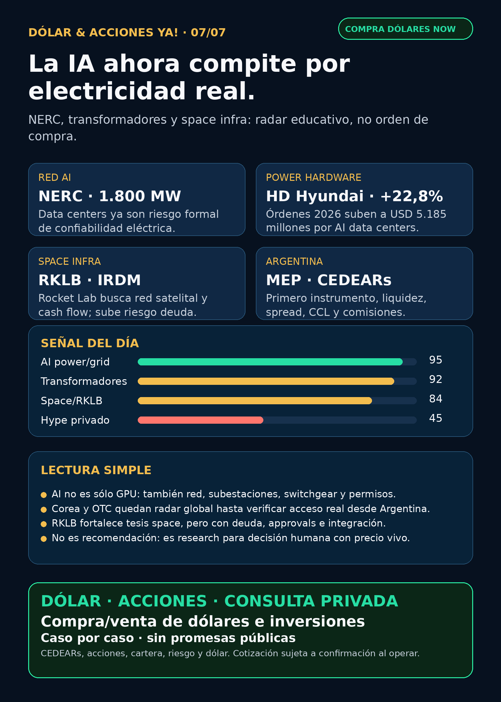

La IA ahora compite por electricidad real.
NERC, transformadores, RKLB/Iridium y capa Argentina: research educativo, no orden de compra.
Texto WhatsApp
Placa del día

Dólar & Acciones YA — 07/07
Lectura simple del día
La señal fuerte de hoy no es “otra acción de AI”. Es más básica: la inteligencia artificial está chocando con la electricidad física.
NERC, el organismo que mira la confiabilidad eléctrica de Norteamérica, documentó que data centers y cargas computacionales ya pueden moverse como bloques gigantes de consumo. Hubo eventos de reducción/desconexión de carga de 1.800 MW, 428 MW, 227 MW, 540 MW y 1.300 MW. En criollo: no hablamos sólo de “falta energía”; hablamos de que un data center grande puede entrar o salir de la red como si una ciudad entera cambiara de consumo de golpe.
Eso cambia la lectura del trade AI: los chips siguen importando, pero también importan transformadores, subestaciones, switchgear, protección/control, estudios de red, storage, generación firme, cooling y permisos.
Para Argentina, la capa práctica no se saltea: una empresa puede ser excelente radar global y aun así no ser buen instrumento local. Antes de cualquier decisión humana hay que mirar si existe CEDEAR/acción/ETF accesible, liquidez, spread, comisiones, CCL/MEP y precio vivo del broker.
Contexto dólar usado sólo como referencia educativa, no precio operativo de broker: BlueLytics a las 08:45 AR mostró oficial vendedor ARS 1.512 y blue vendedor ARS 1.512. CriptoYa a las 08:45 AR mostró USDT cripto ask cerca de ARS 1.566,52; MEP AL30/CCL AL30 tenían timestamp de cierre del 06/07 16:59 AR, así que no los trato como cotización intradiaria viva.
Tesis central
AI está pasando de “demanda de chips” a “demanda de red eléctrica confiable”.
El segundo peaje de AI es electricidad física: no alcanza con GPU si no hay interconexión, transformadores, breakers, subestaciones, power quality y generación que aguante cargas enormes. La oportunidad se abre, pero también sube el riesgo: deuda, permisos, capex, plazos largos y valuaciones caras.
Ordenado por valor educativo/de radar, no por recomendación de compra.
Señales educativas del día — no ranking de compra
1) NERC — data centers como riesgo formal de red
- Señal: NERC 2026 State of Reliability Overview documenta eventos de Customer-Initiated Load Reduction en cargas computacionales: 1.800 MW, 428 MW, 227 MW, 540 MW y 1.300 MW. También marcó acciones Level 3 para modelado y operación de computational large loads.
- Fuente: https://www.nerc.com/globalassets/programs/rapa/pa/nerc_sor_2026_overview.pdf
- Lectura en criollo: si una carga de AI entra/sale muy rápido, la red no lo ve como “un cliente más”; puede verlo como shock operativo. Eso empuja negocios de ingeniería eléctrica, protección, control, interconexión y equipamiento.
- Proxies globales a estudiar:
GEV,VST,NEE,D,CEG,ETN,PWR, Hitachi/Hitachi Energy (6501.T/HTHIY), Siemens Energy (ENR.DE), HD Hyundai Electric (267260.KS) y Hyosung Heavy Industries (298040.KS). - Accionable local Argentina: pendiente de instrumento, liquidez, spread, CCL y broker. YPF/PAMP/TGS/CEPU son capa energética local, pero no son proxies puros de data centers de Estados Unidos.
- Estado: señal fortalecida.
2) HD Hyundai Electric — power hardware coreano confirma la tesis
- Señal: HD Hyundai Electric elevó su objetivo de órdenes 2026 de USD 4.222 millones a USD 5.185 millones (+22,8%) por power transformers, upgrades de grids de Norteamérica y demanda de AI data centers.
- Fuentes: https://transformer-magazine.com/news/hd-hyundai-targets-5-185-b-orders/ y https://www.kedglobal.com/energy/newsView/ked202607020007
- Lectura: el cuello de botella no es sólo transformador gigante. También aparecen medium/low-voltage gear, breakers, switchgear, DC grids y arquitectura eléctrica completa.
- Instrumentos globales: HD Hyundai Electric (
267260.KS), Hyosung Heavy Industries (298040.KS), LS Electric, Hitachi/Hitachi Energy, Siemens Energy y GE Vernova. - Argentina: Corea/OTC no se presume accesible desde IOL/PPI. Si no hay instrumento claro, queda como radar educativo o proxy global a validar.
- Estado: fortalece tesis / radar alto global.
3) RKLB + Iridium — space empieza a parecer infraestructura integrada
- Señal: Rocket Lab anunció acuerdo para adquirir Iridium por USD 54 por acción en cash+stock, con valor empresa aproximado de USD 8.000 millones, cierre esperado mid-2027 y debt financing comprometido por USD 3.600 millones.
- Fuente SEC: https://www.sec.gov/Archives/edgar/data/1819994/000175392626001085/g085783_ex99-1.htm
- Lectura: RKLB deja de ser sólo “cohetes/lanzamientos” y busca red, spectrum, clientes y cash flow. La tesis mejora en profundidad, pero también suben deuda, integración, aprobación regulatoria y riesgo de dilución.
- Accionable local Argentina: ticker USA; CEDEAR/acceso local a verificar antes de hablar de ejecución.
- Estado: fortalece tesis, con riesgo financiero/regulatorio más alto.
4) Tesla — deliveries y storage verificados, no tesis robotaxi automática
- Señal: Tesla Q2 2026 reportó 451.758 vehículos producidos, 480.126 entregados y 13,5 GWh de energy storage deployed. Earnings completos: 22/07/2026.
- Fuente SEC: https://www.sec.gov/Archives/edgar/data/1318605/000162828026046717/exhibit99111111.htm
- Lectura: el dato operativo sirve; no alcanza para afirmar margen, cash flow ni avance robotaxi. Storage sigue siendo el subcarril más conectado a infraestructura/energía.
- Accionable local Argentina: revisar CEDEAR, spread, CCL y precio vivo si se analiza ejecución.
- Estado: vigilar / señal operativa.
5) Defensa física — AVAV/Titan MS entra en radar, pero con auditoría primaria pendiente
- Señal: Unmanned Airspace reportó que JIATF-401 seleccionó Titan MS de AeroVironment para Domestic Shield por USD 80,5 millones, dentro de un IDIQ de USD 500 millones.
- Fuente secundaria verificada: https://www.unmannedairspace.info/counter-uas-systems-and-policies/jiatf-401-selects-avs-titan-multi-sensor-system-for-domestic-shield/
- Lectura: defensa real no es sólo primes viejas: counter-UAS, drones, loitering munitions, sensors, directed energy y homeland defense están activos. Pero sin primaria DoD/AVAV no lo convierto en headline fuerte.
- Instrumentos:
AVAVy ETFs/canastasITA/XARcomo radar educativo. Riesgos: integración BlueHalo, material weaknesses, contratos, valuación y beta alta. - Estado: fortalece tesis / auditar primaria.
6) Pharma/salud — sin GLP-1 fresco fuerte hoy
- Novo Nordisk (
NVO): 6-K del 06/07 confirmó buyback: programa hasta DKK 15.000 millones; tramo hasta aprox. DKK 11.200 millones; acumulado 8.250.000 B shares / DKK 2.419,8 millones al 03/07. Fuente: https://www.sec.gov/Archives/edgar/data/353278/000117184326004469/f6k_070626.htm - AstraZeneca (
AZN): oncology sigue fuerte por Enhertu/Datroway en señales recientes, pero no fue el titular fresco de hoy. - Eli Lilly (
LLY) / GLP-1: sin fuente primaria nueva fuerte. No elevar “FDA aprobó GLP-1 oral” si viene de pickup viejo o RSS secundario. - Estado: pharma revisada; sin señal superior al carril energía/grid.
Watchlist base — seguimiento rápido
- RKLB: señal fuerte por adquisición de Iridium.
Fortalece tesis; riesgo de deuda, reguladores, integración y dilución. - NVDA: sin señal nueva fuerte 24–72h en esta corrida. Moat estructural vigente; no rellenar con titulares secundarios.
- PLTR: filings menores/13G/144, sin señal operativa fuerte.
- TSM: sin señal operativa nueva fuerte; moat foundry vigente.
- MU: sin señal primaria nueva posterior al ciclo HBM/Q3 ya indexado.
- GOOGL/GOOG: cloud, datos y TPUs siguen estructurales; sin señal nueva fuerte hoy.
- AAPL: revisada sin señal nueva fuerte; no vender como AI moat sin producto/monetización verificable.
- HOOD: agentic trading/crypto headlines quedaron sin primaria nueva verificada hoy; mantener como educación gobernada, no promesa de rentabilidad.
- TSLA: Q2 deliveries/storage verificados; esperar earnings 22/07.
- ASML: moat EUV/High-NA vigente; sin catalyst fresco.
ASML sí / all-in no. - Gold / GLD / GOLD / B: instrumento ambiguo. No publico tesis/precio hasta confirmar si hablamos de oro físico, ETF, minera u otro ticker.
- RVI: SEC Form 4 muestra ventas de Robinhood Markets: 30.467 shares el 29–30/06 a aprox. USD 33,08–34,77; quedan 13.345.669 shares. Wrapper/private-market con NAV/premium/liquidez pendientes.
- CBRS: sin señal nueva posterior a OpenAI/AWS/Q1. Riesgos: concentración de clientes, capex, TSMC dependencia, valuation y lockups.
Portfolio/base Mi Simulación
La cartera de Ricardo fue liquidada, devuelta y terminada según corrección de Charly del 24/06. No hay posiciones activas ni P&L real para reportar. Este radar opera como vigilancia para próxima decisión humana o nuevo inversor.
Energía y capa Argentina
- Tesis central: AI power ahora incluye red confiable, computational loads, switchgear, transformadores, subestaciones, generación firme, nuclear/gas, storage, cooling y permisos.
- Energéticas argentinas:
YPF,PAMP,TGS,CEPUrevisadas. YPF tuvo señal reciente de recompra de notes por SEC; PAMP/TGS/CEPU sin señal primaria nueva fuerte hoy. Siguen como radar educativo local por Vaca Muerta, gas, generación, tarifas, infraestructura y riesgo regulatorio. - En criollo: una utility puede ganar por demanda eléctrica, pero también puede sufrir deuda, capex, regulación, permisos, tarifas y riesgo político.
- Antes de ejecutar desde Argentina: chequear MEP/CCL, spread, volumen, comisiones, ratio CEDEAR si existe, parking/liquidación y si el ticker opera realmente en el broker.
Defensa, space, autonomous mobility y crypto gobernado
- Defensa/guerra física:
AVAV,GE,RTX,LMT,NOC,GD,HWM,KTOS,BA,ITA/XARrevisados. AVAV tiene señal secundaria fuerte; GE Aerospace sin señal operativa nueva fuerte en esta corrida. - Space/orbital AI:
RKLBySPCXrevisados. SpaceX/SPCX sigue radar alto por filings previos, pero no accionable automáticamente sin precio vivo, float, liquidez, broker/acceso Argentina/US y lectura de riesgo. - Autonomous mobility / physical AI: TSLA tuvo entregas/storage verificadas; Waymo/Alphabet, Zoox/Amazon, Uber y Joby revisados sin señal primaria nueva fuerte.
- Fintech / AI trading agents: HOOD sigue como caso educativo de agentes financieros con controles: ledger, límites, paper/read-only, aprobación humana y disclaimers.
- Crypto gobernado: sin token nuevo para elevar. El carril sigue como educación/infraestructura/rails regulados, no casino de tokens.
Red flags / hype para ignorar
- Comprar “AI power” sin mirar deuda, permisos, valuación, instrumento y liquidez.
- Confundir demanda eléctrica de data centers con revenue automático para cualquier utility.
- Vender Corea/OTC como si fuera fácil desde Argentina sin broker, moneda, liquidez y spread.
- Tratar la compra de Iridium por RKLB como éxito seguro antes de approvals, deuda, integración y cierre.
- Decir “robotaxi” cuando el dato fresco de TSLA es entregas/storage.
- Publicar AVAV como contrato cerrado fuerte sin primaria DoD/AVAV.
- Vender RVI/DXYZ como “comprar OpenAI/SpaceX limpio” sin NAV, premium/descuento, liquidez y acceso.
- Hablar de Gold/GLD/GOLD/B sin instrumento exacto.
Qué mirar después
- NERC/PJM/ERCOT/FERC: reglas de computational loads, ride-through, modelado y protecciones.
- Primarias de GE Vernova, Hitachi Energy, Siemens Energy, HD Hyundai Electric, Hyosung y LS Electric sobre orders/backlog de transformers, switchgear y subestaciones.
- RKLB/IRDM: proxy statement, deuda final, approvals, calendario y términos de emisión.
- AVAV: primaria DoD/War.gov o AVAV IR para cerrar Titan MS/Domestic Shield.
- RVI/DXYZ: NAV actualizado, premium/descuento, sponsor sales, liquidez y acceso Argentina/USA.
- Tesla earnings 22/07 y márgenes/storage.
Servicio privado
Dólar · CEDEARs · acciones · consulta privada. Si querés comprar o vender dólares, invertir en acciones o pensar una estrategia financiera más personalizada, escribime por privado y lo vemos caso por caso. Cotización sujeta a confirmación al momento de operar.
Disclaimer
Esto es research educativo y editorial, no asesoramiento financiero personalizado. Buena empresa ≠ buena inversión al precio actual ≠ buen instrumento para Argentina ≠ buen tamaño dentro de una cartera.